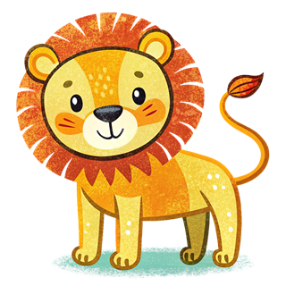
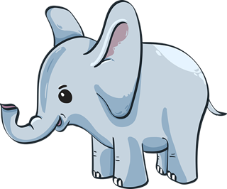
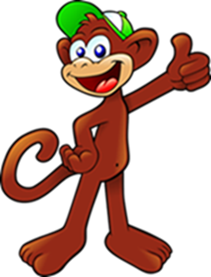
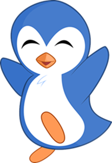
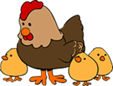
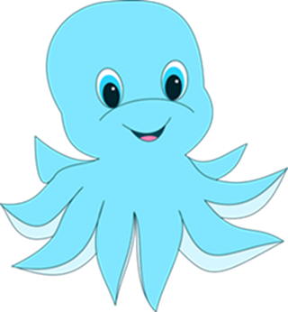

Welcome to Animal Simon Says!
Animal Simon Says is a fun and exciting memory game that will challenge your brain and test your reflexes. Watch the sequence of animal friends light up, then repeat it back. How long can you keep up?
Meet Your Animal Friends






These adorable animals can't wait to play with you!
Start Playing!Why Memory Games are Super Fun and Good for You
Playing memory games like Animal Simon Says is like giving your brain a fun workout! Here's why it's so great:
- It helps your brain get stronger, just like exercise makes your muscles stronger.
- You'll be better at remembering things, like where you put your favorite toy.
- It's like a superpower for your mind - you'll be able to think faster!
- You'll get better at paying attention, which can help you learn new things.
- It's a fun way to learn about animals and make new animal friends.
So, when you play Animal Simon Says, you're not just having fun - you're helping your brain grow big and strong!
Explore Our Website
- Fun-facts: Discover interesting facts about animals.
- Game: Play the exciting Animal Simon Says memory game.
- About Us: Learn more about our team and mission.
- Feedback: Share your thoughts and help us improve.
Animal Simon Says is more than just a game - it's a fun way to learn about animals while improving your memory skills. Explore our site to make the most of your experience!